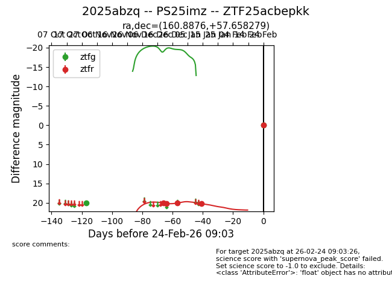
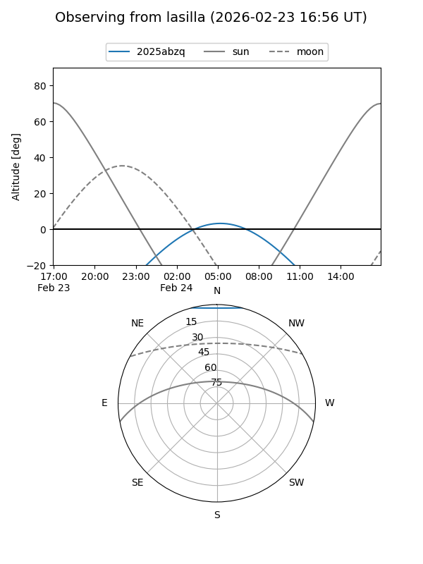
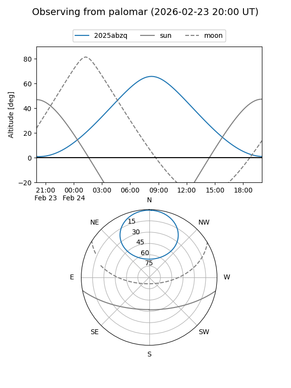
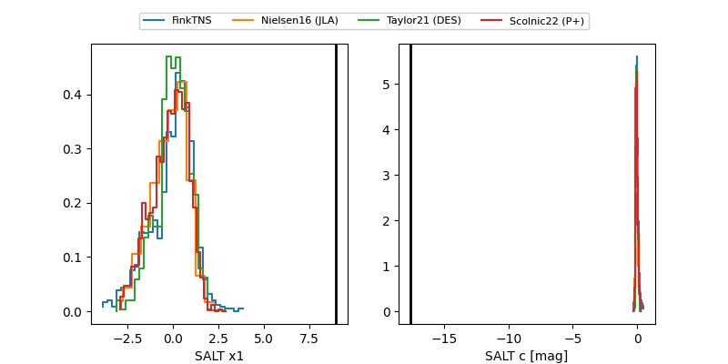

2025abzq
Target 2025abzq at 2026-01-16 10:52
Aliases and brokers:
FINK: link
Lasair: link
ALeRCE: link
TNS: link
YSE: link
alt names
ZTF25acbepkk (ztf,fink_ztf)
2025abzq (tns,yse)
PS25imz (panstarrs)
Coordinates:
equatorial (ra, dec) = 160.8876,+57.65828
equatorial (HMS+DMS) = 10:43:33.03,+57:39:29.80
galactic (l, b) = (150.3956,+52.10526)
Flags:
Photometry:
last ztfg=19.96, ztfr=20.16
1 ztfg, 4 ztfr detections
Lightcurve

Visibility


Additional plots
